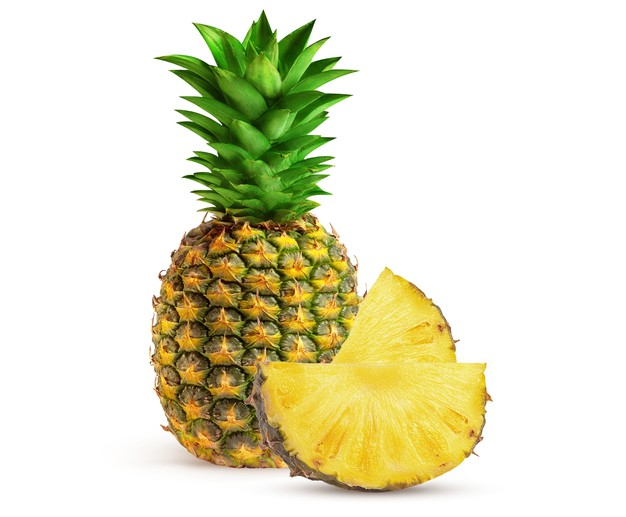

主打產品

BANANA
バナナ
香蕉
香蕉含有豐富維生素和礦物質，因此從中可以很容易地攝取各種營養素。
香蕉膳食纖維含量豐富，具有很好的通便效果，加上含有果膠成分，
能充分潤滑腸道，加速糞便通過的速度，不讓廢物滯留在腸道中，
能避免產生致癌物，可有效預防腸癌。

PINEAPPLE
パイナップル
鳳梨
鳳梨是原產於南美洲的熱帶水果，為禾本目鳳梨科鳳梨屬植物，
因多汁酸甜受到喜愛，有解暑之效，是鳳梨科中最具經濟價值的種類。
南美洲種植鳳梨已有許多世紀，在17世紀傳入歐洲，
於1820年代開始在溫室與熱帶地區開始商業種植。